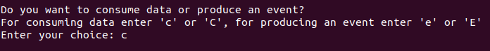
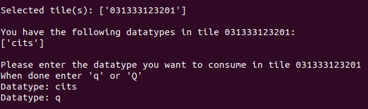
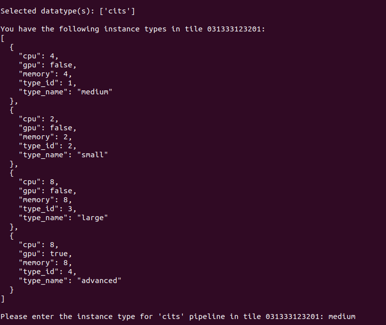

5GMETA platform is an IoT oriented platform that produces data from vehicles to be consumed by third party applications in order to get data from several types:
- CITS
- json like messages with data extracted from the vehicle (ex: GPS position, etc)
- Example
- images
- jpg
- Video streaming
Guide to consuming data
Before jumping to consuming the available datatypes, it is necessary to understand some concepts in order to use 5GMETA APIs:
- Tiles :
-
About Geographic Data Tiles : Geographic data tiles are a way of organizing and distributing large datasets of geographic information, such as satellite imagery or digital maps. Each tile represents a specific geographic area, and the data within each tile is typically organized into a regular grid or matrix. By dividing data into tiles, it becomes easier to manage and distribute large datasets, as users can selectively download only the tiles they need.
-
In this consuming guide file, we provide information about the geographic areas covered by our dataset tiles Datasets available within tiles , along with instructions on how to access and use the data. By using tiles to organize and distribute our data, we aim to make it more accessible and easier to use for a wide range of applications.
- Available Datatypes :
- 5GMETA Platform provide wide range of datatypes:
- C-ITS : Cooperative Intelligent Transport Systems
- JSON Format, ETSI CAM messages also included (ex: GPS position, speed, etc..)
- ETSI is the European Telecommunications Standards Institute (Vehicular communication is based on wireless Vehicle-2-Everything (V2X) networks)

- Images :
- JPG Format

- Video Streams
- Video Streams are in H.264 video standard Format (x264 implementation)
- Instance Types:
- 5GMETA Platform offers a range of computing resources for users to choose from.
- Instance types refer to different configurations of computing resources that are available for users to choose from when setting up their virtual machines or cloud computing instances. In this example, we have four different instance types with varying amounts of CPU, GPU, and memory resources:
- "small" instance type: This instance type has 2 CPUs, 2GB of memory, and no GPU.
- "medium" instance type: This instance type has 4 CPUs, 4GB of memory, and no GPU.
- "large" instance type: This instance type has 8 CPUs, 8GB of memory, and no GPU.
- "advanced" instance type: This instance type has 8 CPUs, 8GB of memory, and a GPU.
- The instance types are identified by unique type IDs (type_id) and human-readable names (type_name) to make it easier for users to select the type of instance that best suits their needs.

Software requirements
This guide is oriented to be executed in an Ubuntu 20.04 environment.
Extra packages to be installed
First of all, you will need to install some dependencies (apt-get):
- python3-avro
- python3-confluent-kafka
- gstreamer1.0-plugins-bad (only if you are going to consume video)
- gstreamer1.0-libav (only if you are going to consume video)
- python3-gst-1.0 (only if you are going to consume video)
sudo apt-get install python3-avro python3-confluent-kafka gstreamer1.0-plugins-bad gstreamer1.0-libav python3-gst-1.0
Also install with pip3:
- kafka-python
- numpy
- python-qpid-proton
- requests
- confluent-kafka
- avro
Note : Be careful of your environment compatibility:
pip3 install -r examples/stream-data-gateway/requirements.txt- Link for examples/stream-data-gateway/requirements.txt
Platform-client helper application
There is a guided applicaction that will help you to get the apropriate parameters from 5GMETA platform to get the data you need. You can execute it by downloading all content from folder:
Once you have donwload that software you can run it by executing:
$ python3 client.py
in your command line.
Client usage
Once you have executed the previous command you will be prompted for: * 5GMETA username * 5GMETA password * These credentials will be valid if you have registered to 5GMETA platform offered by the Identity building block. During 5GMETA project, registration can be done at this Registration web page.

After entering your username/password, client will ask you if you want to: * Consume data from 5GMETA platform * Produce an event in a vehicle connected to 5GMETA platform

In our case we have decided to consume data, so we push c.
Inmediately client will show which tile have data.
And will ask you to select one of them to consume data from.
You can stop selecting tiles by pushing q in your keyboard.
After selecting tiles client will show which datatype is available in the tiles you have selected.

And will ask you to select which datatype do you want to consume.
Once selected you will be prompted with the instancetype you can use in the MEC that is managin data from that tile

and will be asked to choose one.
Once selected you will be prompted with the parameters from 5GMETA platform you have to use in consumer examples

Please notice that the parameters showed in that ouput ARE VALID ONLY IF YOU KEEP client.py RUNNING, once you stop it by pressing q those parameters could not be valid for your consumer application.
PLEASE DON'T STOP client.py APPLICATION BY PUSHING CTRL-C
Consumer examples
5GMETA platform offers some examples to comsume those data.
Those consumer clients will ask you for the parameters obtained as output in the Client usage section.
CITS consumer
This client is a Kafka client that will consume CITS data from 5GMETA platform and will print on the command line output. It takes as input parameters:
- Kafka topic
- Kafka broker address
- Kafka bootstrap port
- Kafka schema registry port
IMAGE consumer
This client is a Kafka client that will consume images data from 5GMETA platform and will print on the command line output. It takes as input parameters:
- Kafka topic
- Kafka broker address
- Kafka bootstrap port
- Kafka schema registry port
Consumer instructions
- Select the suitable consumer as per the produced data and use as follows:
python3 cits-consumer.py topic platformaddress bootstrap_port registry_port
or
mkdir output
python3 image-consumer.py topic platformaddress bootstrap_port registry_port
or
python3 video-consumer.py platformaddress bootstrap_port topic dataflow_id